Actions on Googleは、スマートスピーカー、携帯電話、車、テレビ、ヘッドフォンなど、5億以上のデバイスにわたって、Googleの仮想パーソナルアシスタントであるGoogleアシスタントの機能を拡張するためのソフトウェアを作成できる、開発者向けプラットフォームです。ユーザーは、食料品の購入や乗車予約など、何かを達成するためにGoogleアシスタントを会話に加えることができます（現在の機能の完全なリストについては、アクションディレクトリをご覧ください）。開発者は、Actions on Googleを使用して、ユーザーとサードパーティのフルフィルメントサービスとの間の楽しく効果的な会話体験を簡単に作成し活用することができます。
このコードラボは、マルチモジュールのチュートリアルの一部です。各モジュールは、単独で学習することができますし、または他のモジュールと共に順々に学習することもできます。それぞれのモジュールでは、与えられたソフトウェア要件からアクションを構築する方法と、コードをテストする方法に関する、エンドツーエンドの指示を提供します。また、ユーザーに高品質の会話体験を提供するアクションを実装するために必要な概念とベストプラクティスについても説明します。
このコードラボは、Actions on Googleを使った開発に対する中級以上のレベルのコンセプトをカバーします。私たちは、このコードラボを開始する前に、Level 1 および Level 2 のコードラボにてカバーされるトピックについて、あなた自身で習熟しておくことをお勧めします。
何をつくりますか？
このコードラボでは、あなたはこれらの追加機能を含むことで会話アクションを洗練させます。
- 会話セッション間でユーザの名前を覚えておきます。
- 入力の指示に続くユーザの沈黙を処理します。
- 会話の途中の任意のポイントにてアクションから離脱することをユーザに許可します。
- 画面がサポートされたデバイス上で視覚的な選択の応答をユーザに提示します。
以下のスクリーンショットは、あなたが開発するアクションでの会話フローの例を示しています。
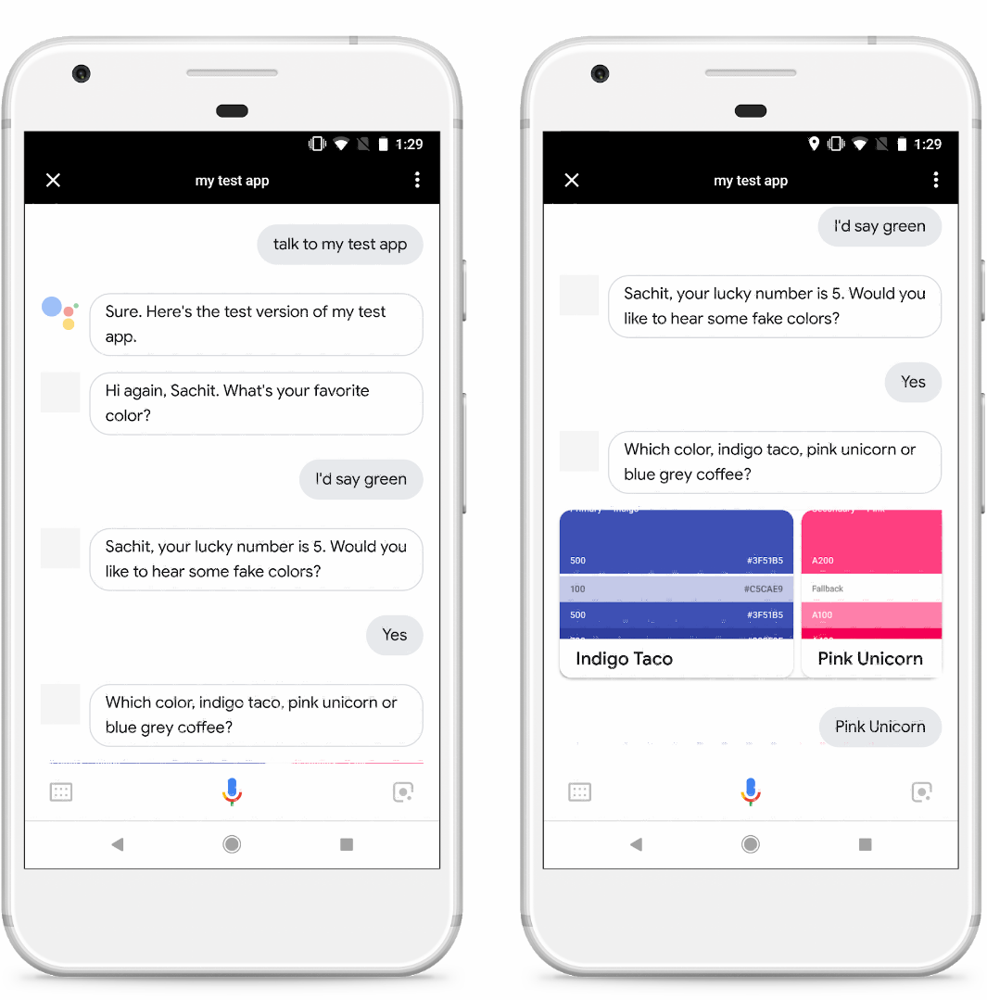
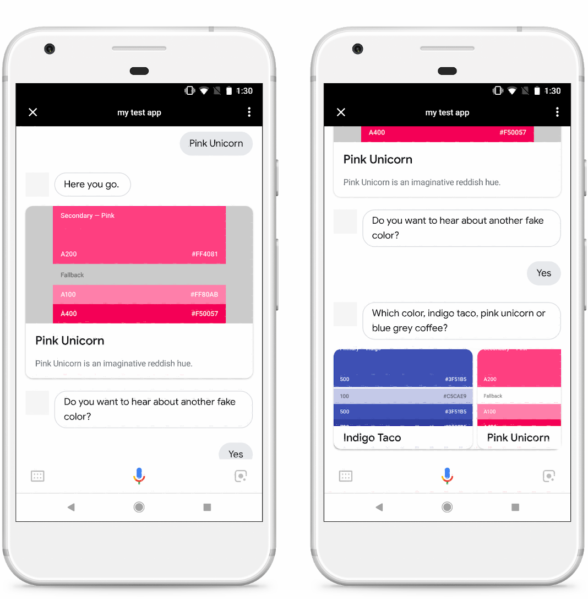
What you'll learn
- 会話型アクションを設計する際のサンプル対話の作成方法。
- 会話を横断するストレージを使った2回目以降の訪問時のユーザへの挨拶のパーソナライズ方法。
- ユーザの沈黙や取り消しのうまい処理方法。
- もしユーザが画面がサポートされたデバイスにいる場合にユーザにリッチで視覚的な応答（すなわち、カルーセル）を送るための、および音声のみのデバイス向けにBasic cardを送るための、複数のサーフェス向けのあなたのアクションの設計方法。
- カルーセルを通じて表示された選択肢のリストからのユーザの選択を処理する方法。
必要なもの
以下のツールがあなたの環境に必要となります。
- WebStorm、Atom、または Sublime のような、あなたが選択したIDE/テキストエディタ。
- インストールされている NodeJS、npm、および git を含むシェルコマンドを実行するためのターミナル。
- Chromeのような、ウェブブラウザ。
このコードラボで使われる Webhook コードを理解するために JavaScript (ES6) に精通していることを強く勧めますが、必須ではありません。
任意: サンプルコード
任意ですが、私たちの GitHubリポジトリ から、このコードラボの全てのプロジェクトコードを得ることができます。
もしあなたが既にFirebase command-line interfaceをインストールしている場合は、ここの手順を行わずに、次のセクションに進むことができます。
Firebase Command Line Interface (CLI) は、Cloud Functions にあなたの Actions project をデプロイ可能にします。
CLIをインストールまたはアップグレードするために、以下の npm コマンドを実行してください:
npm -g install firebase-toolsCLI が正しくインストールされたかどうかを検証するために、ターミナルを開いて、以下を実行してください:
firebase --versionCloud Functions の最新の機能全てが必要となるので、Firebase CLI のバージョンが 3.5.0 以上かどうかを確認してください。もしそうでなければ、3.5.0 以上にアップグレードするために、 npm install -g firebase-tools を実行してください。
次のコマンドを実行して、Firebase CLI を認可します:
firebase loginこのコードラボでは、あなたは Level 2 コードラボを終えている時点から開始していることを想定しています。
ベースファイルをダウンロードする
もしローカルにコードラボを clone していない場合は、以下のコマンドを実行して、コードラボのGitHubリポジトリを clone してください。
git clone https://github.com/actions-on-google/codelabs-nodejsわかりやすさの目的のために、私たちは /level2-complete ディレクトリの名前を /level3 に変更することを強くお勧めします。以下のように、ターミナル内で mv コマンドを使うことでそれを行うことが可能です。
$ cd codelabs-nodejs
$ mv ./level2-complete ./level3Googleの権限設定を確認する
このコードラボで作成するアクションをテストするには、必要な権限を有効にする必要があります。
- "Activity Controls" ページに行きます (https://myaccount.google.com/activitycontrols)。
- サインインされていなければ、あなたのGoogleアカウントでサインインします。
- 以下の権限を有効にします。
- Web & App Activity
- Device Information
- Voice & Audio Activity
プロジェクトとエージェントをセットアップする
もし既に Level 2 コードラボを終えている場合は、このコードラボのための Actions プロジェクトと Dialogflow エージェントのセットアップのために何かを行う必要はありません。フルフィルメントのデプロイを行ってください。
もし最初から始める場合は、以下を行ってください。
- Actions console を開きます。
- Add/import project をクリックします。
- "actions-codelab-3" のように、Project name を入力します。この名前は、あなた自身の内部参照として使われることになり、後で外部向けにプロジェクトの名前をセットすることが可能です。
- Create Project をクリックします。
- カテゴリを選択するのではなく、右上にある Skip をクリックします。
- 左のナビゲーションから、Build > Actions をクリックします。
- Add your first Action をクリックします。
- Create Action ダイアログ上で、Custom Intent を選択して、Dialogflow consoleを起動するために Build をクリックします。
- Dialogflow consoleの Create Agent ページにて、Create をクリックします。
- 左のナビゲーションにある (歯車のアイコン)をクリックします。
- Export and Import をクリックします。
- Restore From Zip をクリックします。
- あなたが先ほど作成した
/level3ディレクトリから、codelab-level-two.zipファイルをアップロードします。 - Done をクリックします。
フルフィルメントをデプロイする
今、あなたのActionsプロジェクトとDialogflowエージェントの準備が整いましたので、Firebase Functions CLIを使って、あなたのローカルにある index.js ファイルをデプロイするために以下の手順を行ってください。
- ターミナル内で、あなたがベースファイル群をcloneした場所の
/level3/functionsに移動します。 - Actions project IDを使って、以下のコマンドを実行します。
firebase use <PROJECT_ID>- 依存ファイルをインストールするために、ターミナル内で以下のコマンドを実行します。
npm install- FirebaseにあなたのWebhookコードをデプロイするために、ターミナル内で以下のコマンドを実行します。
firebase deploy数分後に "Deploy complete!" と表示されれば、それはあなたのWebhookをFirebaseにデプロイすることに成功したことを示しています。
デプロイメントURLを取得する
あなたは、Cloud Function へのURLをDialogflowに提供する必要があります。URLを取得するために、以下のステップに従ってください。
- Firebase Console を開きます。
- 選択肢のリストから、あなたの Actions project を選択します。
- 左のナビゲーションバーから、Develop > Functions に移動します。もし "Choose data sharing settings" と指示された場合は、あなたは Do this later をクリックすることで、この選択を無視することができます。
- Dashboard タブの中で、Trigger の下にある URL を伴う "dialogflowFirebaseFulfillment" というエントリを見つけることができるはずです。その URL をコピーします。
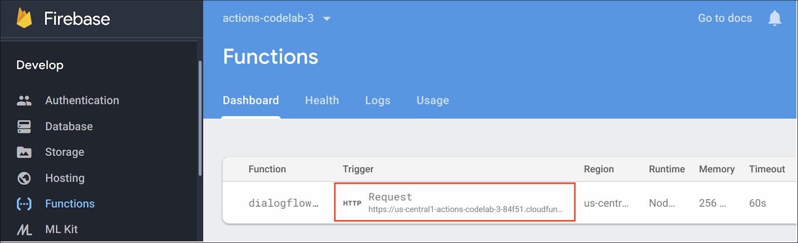
DialogflowにURLをセットする
ここで、あなたはフルフィルメントのためのあなたのWebhookを使うために、Dialogflow agentを更新する必要があります。それを行うために、以下の手順を行ってください。
- Dialogflow console を開きます（気になる場合は、Firebase consoleを閉じてしまって構いません）。
- 左のナビゲーションから、Fulfillment をクリックします。
- Webhook を有効にします。
- もし何もセットされていなければ、Firebase dashboard からコピーしたURLを貼り付けます。
- Save をクリックします。
プロジェクトが正しくセットアップされたか検証する
ここのポイントとして、あなたのアクションを明示的に呼び出すことによって、ユーザは会話を始めることができます。あなたのフルフィルメントは、最初に actions_intent_PERMISSION ヘルパーインテントを使用し、その権限を使ってユーザの表示名を取得します。ユーザが会話の中盤になった際に、ユーザは色を提供することにより、"favorite color" インテントをトリガーすることができます。その後、サウンドエフェクトと共に、ユーザはラッキーナンバーを受け取ります。最後に、ユーザは "fakeColor" カスタムエンティティに一致する "favorite fake color" を提供し、応答にて Basic card を受け取ります。
Actions simulatorにてあなたのアクションをテストするために、以下を行ってください。
- Dialogflow consoleの左のナビゲーションにて、Integrations > Google Assistant をクリックしてください。
- Auto-preview changes が有効になっていることを確認して、あなたのActions projectを更新するために Test をクリックしてください。
- Actions simulatorはあなたのActions projectを読み込みます。あなたのアクションをテストするために、Input フィールド内に "Talk to my test app" とタイプして、enter キーを押してください。
- あなたは、"Hi there, to get to know you better, I'll just need to get your name from Google. Is that ok?" という Level 2 コードラボ で完了した際の最初の応答を見ることになるはずです。
- "yes" とタイプして、enter キーを押します。
- あなたは、あなたのGoogleアカウントの名前を伴う応答を得るはずです。あなたのフルフィルメントが各入力に対して応答することを確認しながら、会話を続けるために指示に従っていってください。
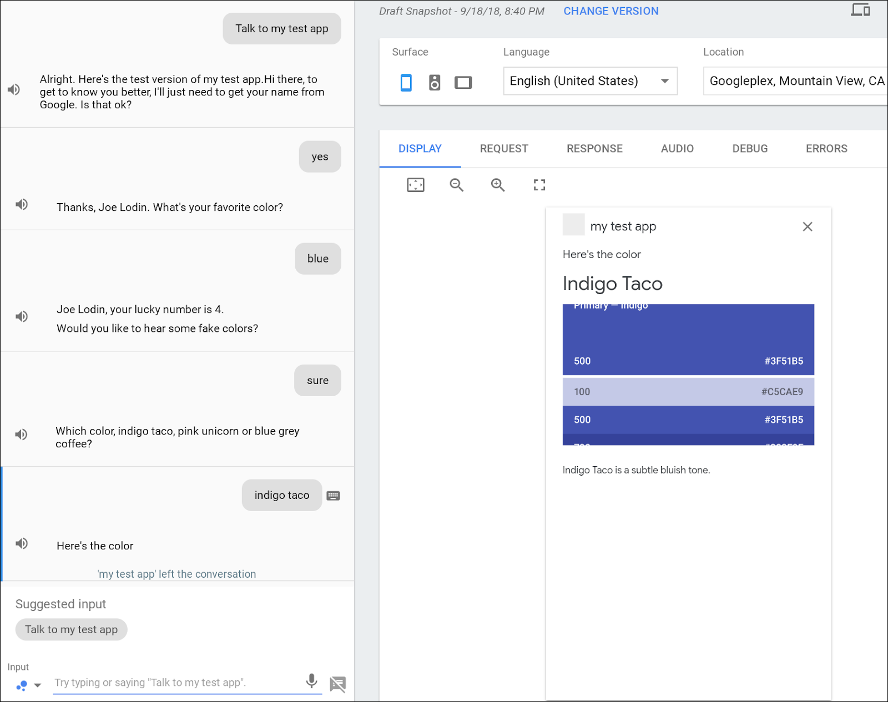
このコードラボを進めていく前に、いろんなActionを構築する際の最初の手順をディスカッションするための時間を少し取ってみましょう。それは、"writing sample dialogs (サンプルダイアログを書く)" 、ということです。
コードを書き始める前に、または会話フローを書く際に、ユーザとアクション間のサンプルインタラクションを書き出す（そして声に出して言う！）ための時間を取ってください。会話が期待通りに進む際の "happy path" に対するユーザとアクションのインタラクション、そして何かうまく行かない際のインタラクション（例えば、何らか期待していない入力をユーザが提供したとき）も、書いてください。サンプルダイアログを書くための方法についてのTipsについて、このブログポストを参照することができます。
私たちは、（コーディングを開始する前の）開発のライフサイクルの始めにて、サンプルダイアログを書き出そうとすることをお勧めします。そして、その後、あなたのアクションに新しい会話のパスを追加しながら設計を繰り返してください。
サンプルダイアログとして、このコードラボでの "happy path" を表現するための例をここで示します。
User: | "Talk to my test app." |
Action: | "Hi there, to get to know your better, I'll just need to get your name from Google. Is that ok?" |
User: | "Yes." |
Action: | "Thanks, <name>. What's your favorite color?" |
User: | "It's... umm... it's green!" |
Action: | "Your lucky number is 5. Would you like to hear some fake colors?" |
User: | "Yes." |
Action: | "Which color, indigo taco, pink unicorn or blue grey coffee?" |
User: | "Pink unicorn." |
Action: | "Here's the color." <shows image of color> |
これは、このフローの視覚的な表現です。
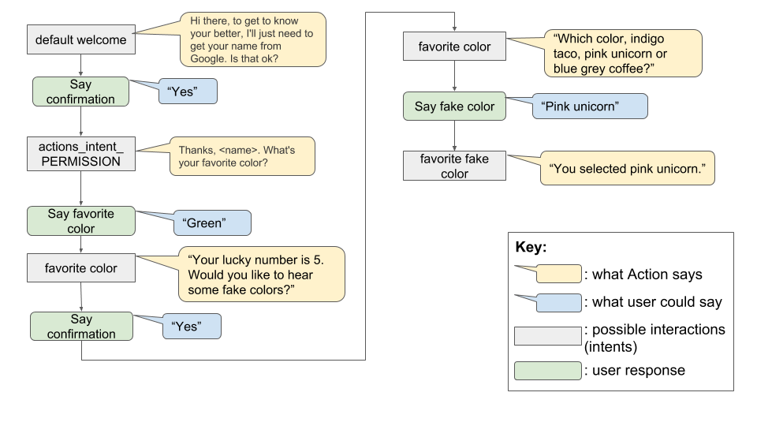
練習: サンプルダイアログを書く
短いエクササイズとして、期待していない応答をユーザが行った場合や、ユーザが黙ってしまった場合といった、他のインタラクションをモデリングするためのサンプルダイアログをどう書くかについて、考える時間を取ってみましょう。
そのようなダイアログの例が以下になります。
User: | "Talk to my test app." |
Action: | "Hi there, to get to know your better, I'll just need to get your name from Google. Is that ok?" |
User: | "Nope." |
Action: | "OK, no worries. What's your favorite color?" |
User: | "It's... umm... it's a boat!" |
Action: | "Sorry, what was that?" |
User: | "I mean green." |
Action: | "Your lucky number is 5. Would you like to hear some fake colors?" |
User: | "Yes." |
Action: | "Which color, indigo taco, pink unicorn or blue grey coffee?" |
User: | <silence> |
Action: | "Which color would you like to hear about?" |
User: | "Pink unicorn." |
Action: | "Here's the color." <shows image of color> "Would you like to hear about another fake color?" |
User: | "No." |
Action: | "Let me know when you want to talk about colors again!" |
同じユーザにて、会話のセッション間で情報を保存しておくことは、あなたのアクションにとってしばしば有効です。あなたのアクションは、ユーザが行うであろう会話をパーソナライズさせるために、ユーザに設定を尋ねて、それを覚えておいて後で使うことができます。例えば、郵便番号に基づいた天気予報をユーザに提供するアクションは、後の会話のために、アクションにその郵便番号を覚えておくようにしたいかどうかをユーザに問い合わせることができるでしょう。
conv.user.storage オブジェクトは、特定のユーザのために会話を横断してデータを保存するための、Actions on Google Node.js クライアントライブラリによって提供されるデータ構造です。コードラボのこのセクションでは、あなたのアクションにて新しい会話をユーザが始める時はいつでも名前によってユーザに心地よく挨拶をするために、この機能を使います。
フルフィルメントを実装する
 エディタで
エディタで index.js ファイルを開き、conv.data の全てのインスタンスを conv.user.storage に置き換えます。
以下のコードに置き換えることによって conv.user.storage オブジェクトを使うために、あなたの Default Welcome Intent ハンドラを更新します。
index.js
// Handle the Dialogflow intent named 'Default Welcome Intent'.
app.intent('Default Welcome Intent', (conv) => {
// Asks the user's permission to know their name, for personalization.
conv.ask(new Permission({
context: 'Hi there, to get to know you better',
permissions: 'NAME',
}));
});上記を以下に変更します。
index.js
// Handle the Dialogflow intent named 'Default Welcome Intent'.
app.intent('Default Welcome Intent', (conv) => {
const name = conv.user.storage.userName;
if (!name) {
// Asks the user's permission to know their name, for personalization.
conv.ask(new Permission({
context: 'Hi there, to get to know you better',
permissions: 'NAME',
}));
} else {
conv.ask(`Hi again, ${name}. What's your favorite color?`);
}
});Level 2 コードラボにて、同一の会話でのやり取りの間で情報を保存できるようにするために、私たちは conv.data オブジェクトを導入しました。上記のコードスニペットで更新されることで、代わりに会話間でユーザの名前を保存するための conv.user.storage オブジェクトを使います。ユーザが以前ユーザの名前にアクセスするための権限をあなたのアクションに許可した場合は、挨拶のメッセージにユーザの名前が含まれることでしょう。
会話データの保存をテストする
ターミナル内で、Firebaseに更新されたWebhookコードをデプロイするために、以下のコマンドを実行します。
firebase deployActions simulatorにてあなたのアクションをテストするために、以下を行ってください。
- Actions consoleにて、Test > Simulator に移動します。
- Input フィールド内にて "Talk to my test app" とタイプして enter キーを押します。
- "Yes" とタイプして、enter キーを押します。
- "Cancel" とタイプして、enter キーを押します。
- Input フィールド内にて再び "Talk to my test app" とタイプして enter キーを押します。これにより、別の会話を開始します。
この2番目の会話を始めた際に、あなたのアクションは初回にあなたがパーミッションを与えたあなたの名前を覚えているはずです。
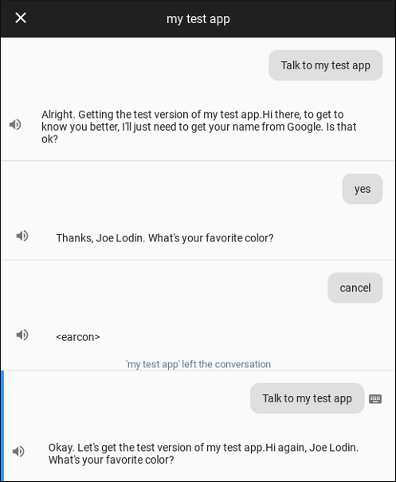
スマートスピーカーや他の画面を持たないサーフェスでは、デバイスがユーザの応答を待っているかどうかを明確で視覚的に表示する機能を持たない可能性があります。ユーザは、あなたのアクションが応答することを待っていると認識しないかもしれません。従って、ユーザに応答が必要であることを気づかせるための no-input イベントハンドリングを実装することは、重要な設計プラクティスです。
Dialogflowをセットアップする
- no-input イベントを処理するための新しいインテントをセットアップします。新しいインテントを作成するために、Dialogflow console内の左のナビゲーションにある Intents の隣の + ボタンをクリックします。
- 自由にこの新しいインテントに名前を付けることができます。私たちの例では、actions_intent_NO_INPUT とそれに名前を付けました。
- Events にて、"actions_intent_NO_INPUT" と呼ばれる新しいイベントを追加します。
- Webhook フルフィルメントのトグルを ON にして、Save をクリックします。
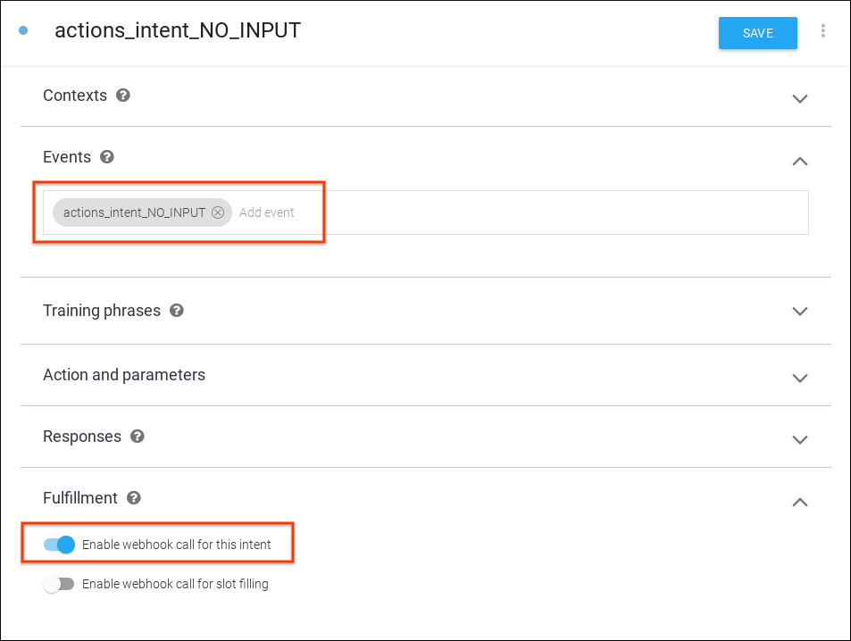
フルフィルメントを実装する
エディタで index.js ファイルを開き、以下のコードを追加します。
index.js
// Handle the Dialogflow NO_INPUT intent.
// Triggered when the user doesn't provide input to the Action
app.intent('actions_intent_NO_INPUT', (conv) => {
// Use the number of reprompts to vary response
const repromptCount = parseInt(conv.arguments.get('REPROMPT_COUNT'));
if (repromptCount === 0) {
conv.ask('Which color would you like to hear about?');
} else if (repromptCount === 1) {
conv.ask(`Please say the name of a color.`);
} else if (conv.arguments.get('IS_FINAL_REPROMPT')) {
conv.close(`Sorry we're having trouble. Let's ` +
`try this again later. Goodbye.`);
}
});conversation オブジェクトの REPROMPT_COUNT という名前のプロパティを活用していることに注意してください。この値は、私たちにユーザがどのくらい多く指示したかを知らせてくれます。これにより、毎回私たちのメッセージを変更することができます。コードスニペットでは、最大の reprompt 回数を2にセットしていて、それが会話を終えるポイントになります。これはベストプラクティスであり、3回以上のユーザへの reprompt を行うことは、不満や会話の停止を増加させます。
カスタム reprompts をテストする
ターミナル内で、Firebaseに更新されたWebhookコードをデプロイするために、以下のコマンドを実行します。
firebase deployActions simulatorにてあなたのアクションをテストするために、以下を行ってください。
- Actions consoleにて、Test > Simulator に移動します。
- 継続されている会話があれば終了させます。そして、Surface の中で、Speaker アイコンを選択します。
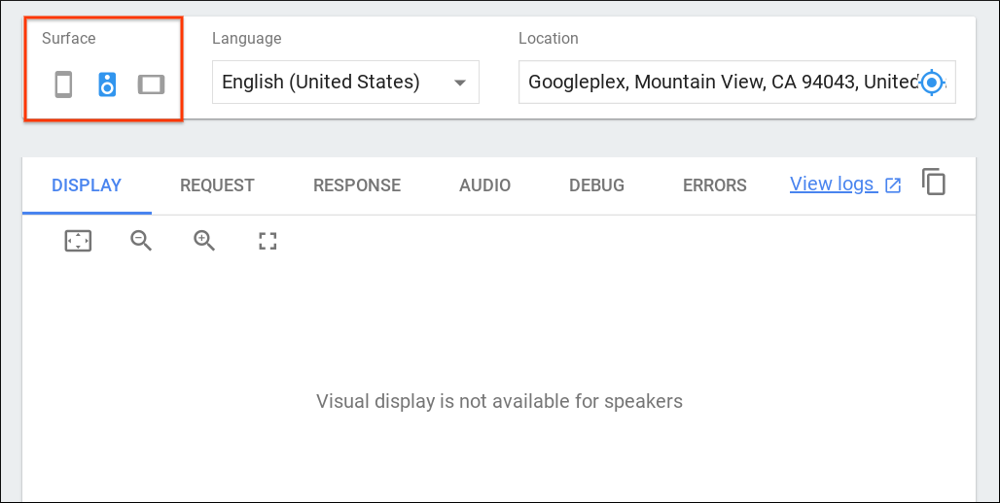
- Input フィールド内に "Talk to my test app" とタイプして enter キーを押します。もしあなたのアクションがあなたの名前を覚えていない場合は、"yes" とタイプして enter キーを押します。
- 応答なしをシミュレートするために、Input フィールドの右にある No Input アイコンをクリックします。
あなたのアクションは、色を入力する代わりに入力なしをシミュレートする度に、カスタム reprompt メッセージで応答するはずです。最終的に、3回目の reprompt で会話が終わります。
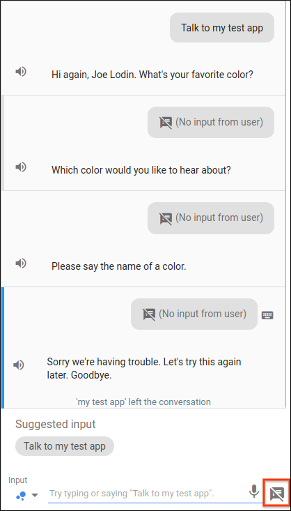
あなたのアクションは、ユーザが全ての道を通じて会話のパスに従っていなかったとしても、ユーザが会話を迅速に終えることができるようにしておくべきです。デフォルトとして、ユーザがいくつかのキーワード（"exit", "cancel", "stop", "nevermind", "goodbye"）の一つを発言した時にはいつでも、会話を終了して earcon （終了音）を再生します。
あなたは、Dialogflowにて actions_intent_CANCEL イベントを登録し、カスタムレスポンスを定義することで、この振る舞いを変更することができます。
このセクションでは、Dialogflowにげ新しい Cancel インテントを作成して、適切な final response メッセージを追加します。
Dialogflowをセットアップする
- ユーザが会話を終えることを処理するための新しいインテントをセットアップします。Dialogflow consoleにて、新しいインテントを作成するために、左のナビゲーションの Intents の隣にある + ボタンをクリックします。
- 自由にこの新しいインテントに名前を付けることができます。私たちの例では、
actions_intent_CANCELとそれに名前を付けました。 - Events にて、
actions_intent_CANCELと呼ばれる新しいイベントを追加します。 - Responses にて、"Let me know when you want to talk about colors again!" というような Text response を追加します。良いデザインプラクティスとして、終了時のテキスト応答は60文字よりも短くすることに注意してください。
- Add Responses の下にある Set this intent as end of conversation スイッチを ON に変更します。
- Save をクリックします。
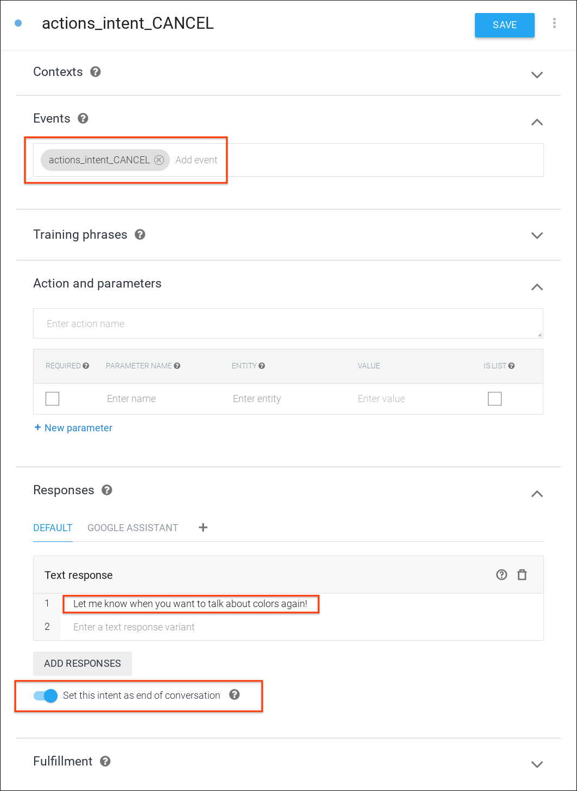
会話の終了のカスタマイズをテストする
Actions simulator にて会話の終了のプロンプトをテストするために、以下の手順に従います。
- Actions consoleにて、Text > Simulator に移動します。
- Input フィールド内に "Talk to my test app" とタイプして enter キーを押します。もしあなたのアクションがあなたの名前を覚えていない場合は、"yes" とタイプします。
- "Goodbye" とタイプして、enter キーを押します。
あなたのアクションは、あなたのカスタム終了プロンプトで応答して会話を終えるはずです。
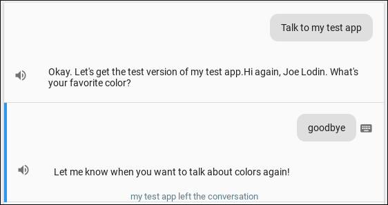
コードラボのこのセクションでは、画面出力を持つデバイス上で偽色（fake color）の選択肢をユーザに見せて選択する機能を追加することで、あなたのアクションを改善します。
会話の終了のカスタマイズをテストする
会話の体験がマルチモーダルになるように設計することが重要です。それは、声やテキストだけでなく、デバイスがサポートする他のインタラクションモード（例えばタッチスクリーン）を介してユーザが会話に参加できることを意味しています。
私たちは通常、会話を設計することと、声のみの体験のためのサンプルダイアログの書き出しを始めます。その後、私たちは、理解を改善するための視覚を追加することを含む、マルチモーダルな体験を設計します。
画面出力を持つデバイスのために、Actions on Googleプラットフォームはいくつかの種類の視覚的なコンポーネントを提供します。それらを使って、ユーザに情報の詳細を提供することをあなたのアクションに選択的に統合することができます。
マルチモーダルサポートの追加のためのある共通的なユースケースは、会話の中でいくつかの利用可能な選択肢をユーザに選択させることがユーザに必要となる時です。
私たちの会話の設計において、フロー内でユーザが偽色を選択することが求められる決定ポイントがあります。私たちは、視覚的なコンポーネントを追加することで、このインタラクションを改善します。
視覚的な選択を表現するための良い候補は、カルーセルです。このコンポーネントは、ユーザが選ぶことになる項目の選択をあなたのアクションに行わせます。各項目は、画像によって簡単に識別可能です。
Dialogflowをセットアップする
カルーセルを追加するために、Dialogflow consoleにて以下の変更を行ってください。
follow-upインテントのWebhook呼び出しを有効にする
あなたの favorite color - yes follow-upインテントが一致した際には、ユーザは視覚的な要素であるカルーセルの提供を受けます。ベストプラクティスとして、視覚的な要素を持つコンポーネントを提示する前に、ユーザの現在のデバイスが画面を持つかどうかチェックすべきです。favorite color -yes follow-upインテントにて、このチェックが実行されるように更新します。
- Dialogflow consoleの左のナビゲーションにおいて、Intents をクリックします。
favorite colorインテントの隣にある矢印をクリックして、favorite color - yesを選択します。- ページの下部の Fulfillment セクション内で、 Enable webhook call for this intent オプションを有効にします。
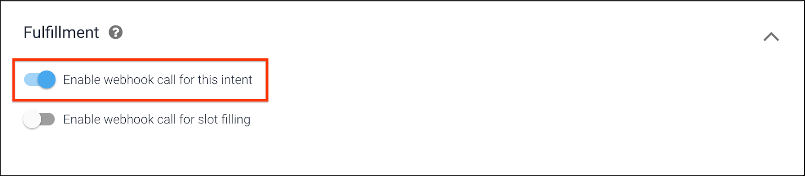
- ページ上部の Save ボタンをクリックします。
視覚的な要素を処理するためにインテントを更新する
あなたは、ユーザの選択を処理するために、Dialogflow console内で favorite fake color インテントを更新する必要があります。それを行うために、以下を行ってください。
- Dialogflow consoleの左のナビゲーションにて、 Intents をクリックし、
favorite fake colorインテントを選択します。 - Events にて、
actions_intent_OPTIONを追加します。Dialogflowは、ユーザがカルーセルから選択肢を選んだ際のこの特定のイベントを見つけます。
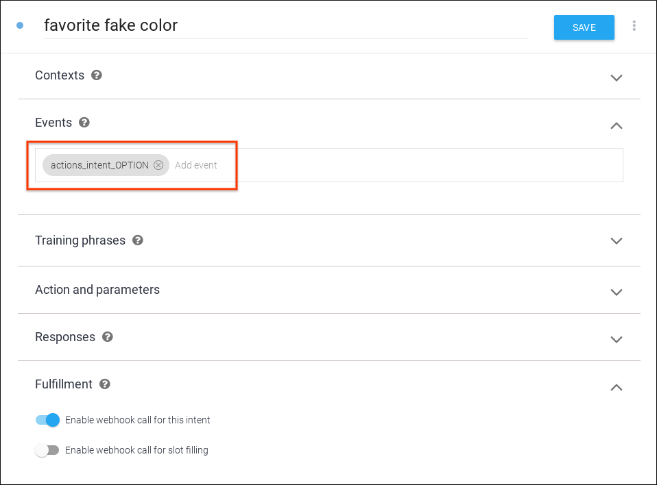
- ページ上部の Save ボタンをクリックします。
フルフィルメントを実装する
あなたのWebhookでのフルフィルメントを実装するために、以下の手順を行ってください。
依存ライブラリを読み込む
マルチモーダルな会話体験をサポートするために、あなたはデバイスのサーフェス能力に基づく価値のある応答を提供する必要があります。あなたのフルフィルメント内で conv.screen プロパティをチェックすることでこれを行います。
index.js ファイルにて、require() 関数を更新し、actions-on-google パッケージから Carousel および Image パッケージを追加します。そして、あなたの imports は以下のようになります。
index.js
// Import the Dialogflow module and response creation dependencies
// from the Actions on Google client library.
const {
dialogflow,
BasicCard,
Permission,
Suggestions,
Carousel,
Image,
} = require('actions-on-google');カルーセルを構築する
次に、カルーセルを構築するために、 fakeColorCarousel() 関数を定義します。
index.js ファイルにて、以下のコードを使って fakeColorCarousel() 関数を追加します。
index.js
// In the case the user is interacting with the Action on a screened device
// The Fake Color Carousel will display a carousel of color cards
const fakeColorCarousel = () => {
const carousel = new Carousel({
items: {
'indigo taco': {
title: 'Indigo Taco',
synonyms: ['indigo', 'taco'],
image: new Image({
url: 'https://storage.googleapis.com/material-design/publish/material_v_12/assets/0BxFyKV4eeNjDN1JRbF9ZMHZsa1k/style-color-uiapplication-palette1.png',
alt: 'Indigo Taco Color',
}),
},
'pink unicorn': {
title: 'Pink Unicorn',
synonyms: ['pink', 'unicorn'],
image: new Image({
url: 'https://storage.googleapis.com/material-design/publish/material_v_12/assets/0BxFyKV4eeNjDbFVfTXpoaEE5Vzg/style-color-uiapplication-palette2.png',
alt: 'Pink Unicorn Color',
}),
},
'blue grey coffee': {
title: 'Blue Grey Coffee',
synonyms: ['blue', 'grey', 'coffee'],
image: new Image({
url: 'https://storage.googleapis.com/material-design/publish/material_v_12/assets/0BxFyKV4eeNjDZUdpeURtaTUwLUk/style-color-colorsystem-gray-secondary-161116.png',
alt: 'Blue Grey Coffee Color',
}),
},
}});
return carousel;
};カルーセルは Items オブジェクトを使って構築されることに注意してください。そのオブジェクトは、 titles や Images を含むいくつかのプロパティを持っています。 Image 型は、ユーザが選択をクリックした際に開く url を含むだけでなく、アクセシビリティのために代替テキストも含みます。
ユーザの選択がどのカルーセルカードなのかを識別するために、あなたは "indigo taco", "pink unicorn", "blue gey coffee" といった名前で、Items オブジェクトのキーを使うことになるでしょう。
"favorite fake color - yes" のためのインテントハンドラを追加する
次に、 conv.screen プロパティが true かどうかをチェックするための favorite color - yes follow-up インテントのためのハンドラを追加する必要があります。もしその場合、これはデバイスが画面を持つことを示します。その後、あなたは fakeColorCarousel() を引数として渡して ask() を呼び出すことで、ユーザにカルーセルから偽色を選択することを尋ねる応答を送ります。
index.js ファイルにて、あなたのフルフィルメントに以下のコードを追加することで、現在のサーフェスに画面があるかどうかのチェックを追加します。
index.js
// Handle the Dialogflow intent named 'favorite color - yes'
app.intent('favorite color - yes', (conv) => {
conv.ask('Which color, indigo taco, pink unicorn or blue grey coffee?');
// If the user is using a screened device, display the carousel
if (conv.screen) return conv.ask(fakeColorCarousel());
});画面のないデバイスをサポートする
もしサーフェス能力のチェックが false を返した場合、あなたのユーザは画面を持たないデバイスであなたのアクションとインタラクションしています。あなたは、あなたのアクションにて可能な限り多くの異なるユーザをサポートすべきですので、視覚的な要素を表示する代わりに、色の説明を読む代替の応答をここで追加しましょう。
index.js ファイルにて、以下のコードに置き換えることで、サーフェス能力のチェックとフォールバックを追加します。
index.js
// Handle the Dialogflow intent named 'favorite fake color'.
// The intent collects a parameter named 'fakeColor'.
app.intent('favorite fake color', (conv, {fakeColor}) => {
// Present user with the corresponding basic card and end the conversation.
conv.close(`Here's the color`, new BasicCard(colorMap[fakeColor]));
});これを以下に置き換えます。
index.js
// Handle the Dialogflow intent named 'favorite fake color'.
// The intent collects a parameter named 'fakeColor'.
app.intent('favorite fake color', (conv, {fakeColor}) => {
fakeColor = conv.arguments.get('OPTION') || fakeColor;
// Present user with the corresponding basic card and end the conversation.
conv.ask(`Here's the color.`, new BasicCard(colorMap[fakeColor]));
if (!conv.screen) {
conv.ask(colorMap[fakeColor].text);
}
});カルーセル応答をテストする
ターミナル内で、Firebaseに更新されたWebhookコードをデプロイするために、以下のコマンドを実行します。
firebase deploy- Actions consoleにて、Test > Simulator に移動します。
- Surface の中で、Smart Display アイコンを選択します。
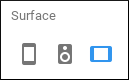
- Input フィールド内に "Talk to my test app" とタイプして enter キーを押します。もしあなたのアクションがあなたの名前を覚えていない場合は、"yes" とタイプして enter キーを押します。
- "blue" とタイプして enter キーを押します。
- "sure" とタイプして enter キーを押します。
あなたは、右の Display タブの中で、カルーセル応答の表示を見るはずです。
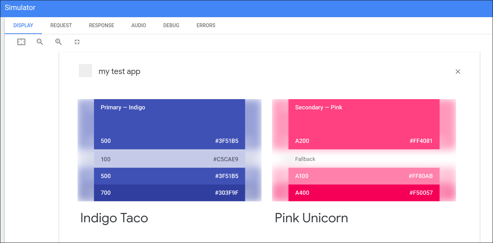
あなたは、色についてのより詳細な情報を持つカードを得るために、シミュレータ内で選択肢をタイプすることができますし、カルーセルの選択肢の一つをクリックすることができます。
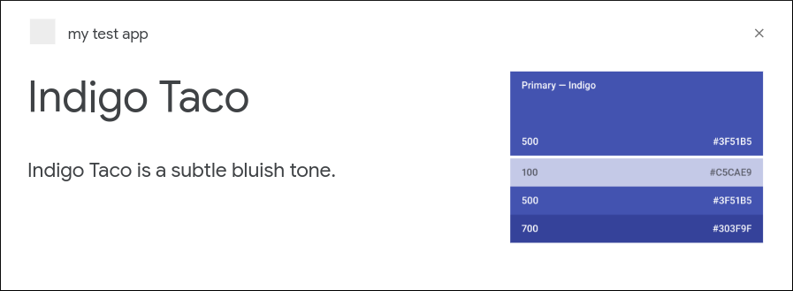
視覚的ではない応答をテストする
あなたは、画面を表示する能力を持たないデバイス上においてもどのように会話がされるかを確認するために、あなたの応答をテストすべきです。音声のみのサーフェスであなたの応答をテストするために、以下の手順を行います。
- 前の会話を終了するために、シミュレータの左上にある X を押します。
- Surface 内で、Speaker アイコンを選択します。
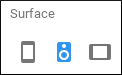
- Input フィールド内で "Talk to my test app" とタイプして enter キーを押します。もしアクションがあなたの名前を覚えていなかった場合は、"yes" とタイプして enter キーを押します。
- "blue" とタイプして enter キーを押します。
- "sure" とタイプして enter キーを押します。
- "indigo taco" とタイプして enter キーを押します。
あなたが選択した色に応じた説明が、音声での応答として返されるはずです。
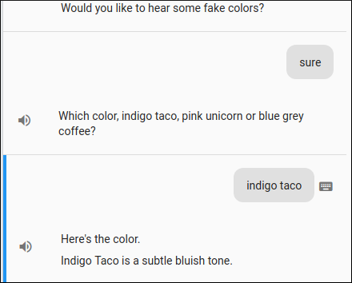
あなたのアクションは、会話の最後に、複数の選択肢がある質問（"Which color, indigo taco, pink unicorn or blue grey coffee?"）をユーザに提示します。ユーザは、あなたのアクションを際呼び出しして決定ポイントまで会話を進めることなく、ユーザが選択可能な他の選択肢を得ることもできるべきです。
会話体験を設計する
コードラボのこのセクションでは、他の色を選択するか、そのまま会話を終えるかをユーザに選ばせるためのプロンプトを作成します。
ここに、ユーザがもう一つの偽色を選択したい場合のインタラクションシナリオのサンプルダイアログ例があります。
Action: | "Would you like to hear some fake colors?" |
User: | "Yes" |
Action: | "Which color, indigo taco, pink unicorn or blue grey coffee?" |
User: | I like pink unicorn." |
Action: | "Here's the color. Do you want to hear about another fake color?" |
User: | "Yes please." |
Action: | "Which color, indigo taco, pink unicorn or blue grey coffee?" |
そして、以下はユーザがもう一つの偽色の選択を拒否した場合のインタラクションシナリオのサンプルダイアログ例があります。
Action: | "Would you like to hear some fake colors?" |
User: | "Yes" |
Action: | "Which color, indigo taco, pink unicorn or blue grey coffee?" |
User: | I like pink unicorn." |
Action: | "Here's the color. Do you want to hear about another fake color?" |
User: | "No thanks." |
Action: | "Goodbye, see you next time!" |
以下は、これらのサンプルダイアログを視覚的に表現したものです。
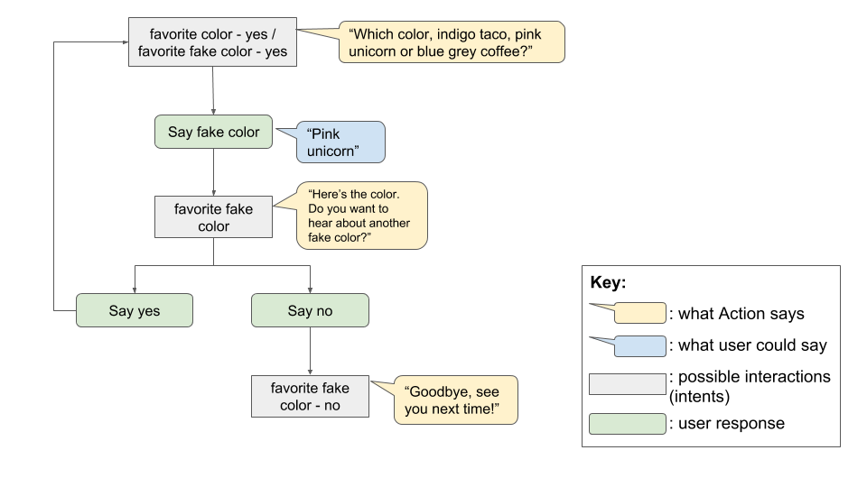
このフローを実装するために、特定のインテントの後にDialogflowがユーザの応答に基づいて一致させる follow-up intent を使います。私たちのアクションにおいては、以下の方法で follow-up インテントを適用します。
- 別のお気に入りの色を聞きたいかどうか尋ねた後にユーザが "No" と言った場合は、最後のメッセージを送信し会話を終了する follow-up インテントをトリガーします。
- 同じプロンプトにてユーザが "Yes" と言った場合は、別のお気に入りの指定をユーザにプロンプトする follow-up インテントをトリガーします。
follow-up インテントを使う時は、あなたのアクションは会話のコンテキスト（conversational context）を気にしておく必要があります。つまり、会話の中でのある時点までの状況を理解する必要があります。ユーザが主体を変更しない限り、私たちは会話のスレッドが継続していると見なすことができます。従って、あなたのアクションは、曖昧さを解決し、現在の発話をより理解するために、ユーザの以前の発言を使う可能性が高いです。例えば、花を注文するアクションは、ユーザからの "What about a half dozen?" という問い合わせについて、ユーザの前の発言への follow-up と理解すべきであり、それは "How much does a bouquet of 6 roses cost?" と解釈すべきです。
Dialogflowをセットアップする
追加のプロンプトを使ってカルーセルの選択を follow-up するために、以下を行ってください。
- Dialogflow consoleの左のナビゲーションにて、Intents をクリックします。
- カーソルを favorite fake color の上にホバーさせ、その後 Add follow-up intent をクリックします。これを2回行いますが、一度目は yes を、二度目は no を選択してください。
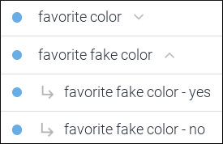
favorite fake color - no インテントをクリックして、以下を行ってください。
- Responses の中で、Text response として "Goodbye, see you next time!" を追加します。
- Set this intent as end of conversation をONにします。
- Save をクリックします。
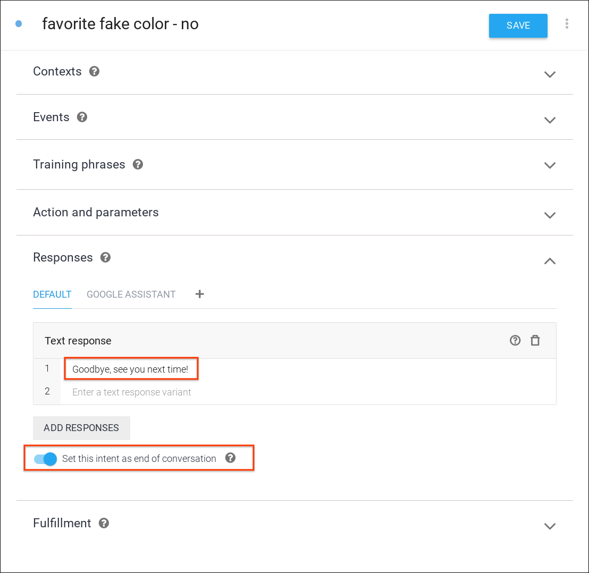
左のナビゲーションにて Intents をクリックし、そして favorite fake color - yes インテントをクリックします。その後、以下を行います。
- Fulfillment の中で、 Enable webhook call for this intent をONにします。
- Save をクリックします。
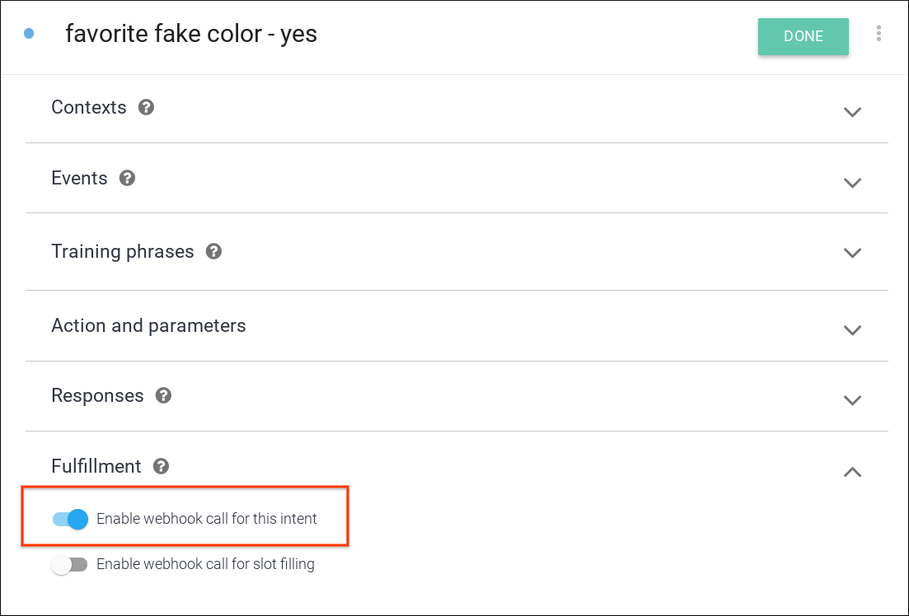
フルフィルメントを実装する
次に、 favorite fake color - yes follow-up インテントのためのハンドラを追加する必要があります。
index.js ファイルの中で、以下のコードを置き換えます。
index.js
// Handle the Dialogflow intent named 'favorite color - yes'
app.intent('favorite color - yes', (conv) => {
conv.ask('Which color, indigo taco, pink unicorn or blue grey coffee?');
// If the user is using a screened device, display the carousel
if (conv.screen) return conv.ask(fakeColorCarousel());
});これを以下に置き換えます。
index.js
// Handle the Dialogflow follow-up intents
app.intent(['favorite color - yes', 'favorite fake color - yes'], (conv) => {
conv.ask('Which color, indigo taco, pink unicorn or blue grey coffee?');
// If the user is using a screened device, display the carousel
if (conv.screen) return conv.ask(fakeColorCarousel());
});最後に、2つの新しい follow-up インテントをトリガーする Suggestion chips を favorite fake color インテントハンドラに追加します。
index.js ファイルの中で、以下のコードに置き換えることで、favorite fake color インテントを Suggestion chips を使うように更新します。
index.js
// Handle the Dialogflow intent named 'favorite fake color'.
// The intent collects a parameter named 'fakeColor'.
app.intent('favorite fake color', (conv, {fakeColor}) => {
fakeColor = conv.arguments.get('OPTION') || fakeColor;
// Present user with the corresponding basic card and end the conversation.
conv.ask(`Here's the color.`, new BasicCard(colorMap[fakeColor]));
if (!conv.screen) {
conv.ask(colorMap[fakeColor].text);
}
});これを以下に置き換えます。
index.js
// Handle the Dialogflow intent named 'favorite fake color'.
// The intent collects a parameter named 'fakeColor'.
app.intent('favorite fake color', (conv, {fakeColor}) => {
fakeColor = conv.arguments.get('OPTION') || fakeColor;
// Present user with the corresponding basic card and end the conversation.
if (!conv.screen) {
conv.ask(colorMap[fakeColor].text);
} else {
conv.ask(`Here you go.`, new BasicCard(colorMap[fakeColor]));
}
conv.ask('Do you want to hear about another fake color?');
conv.ask(new Suggestions('Yes', 'No'));
});カルーセルの follow-up プロンプトをテストする
ターミナル内で、Firebaseに更新されたWebhookコードをデプロイするために、以下のコマンドを実行します。
firebase deploy- Actions consoleにて、Test > Simulator に移動します。
- Surface の中で、Smart Display アイコンを選択します。
- Input フィールド内に "Talk to my test app" とタイプして enter キーを押します。もしあなたのアクションがあなたの名前を覚えていない場合は、"yes" とタイプします。
- "blue" とタイプします。
- "yes" とタイプします。
- カルーセルの選択肢を一つクリックします。あなたは別の色を選択するかどうか聞かれるはずです。そして、Basic cardの下に、Yes または No を言うための Suggestion chips があるのがわかるはずです。
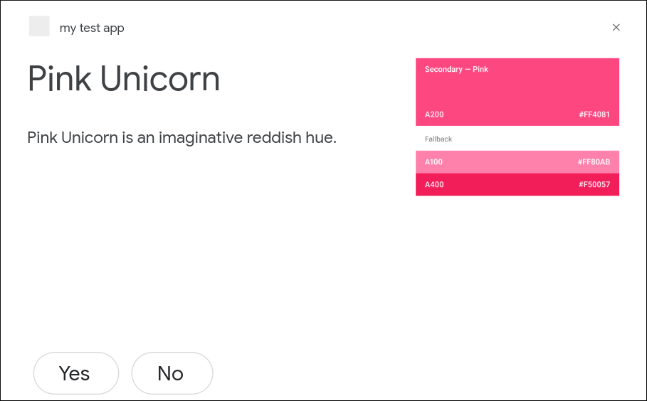
Yes をクリックすると、再びカルーセルが表示されるはずです。そして、No chipは、フレンドリーなメッセージと共に会話から抜けるはずです。
あなたはまた、画面の機能を持たないデバイス上でどのように実行されるかについて、あなたの応答をテストすべきです。異なるサーフェスであなたの応答をテストするために、以下を行います。
- 前の会話を終えるために、"No をタイプまたはクリックします。
- Surface の中で、Speaker アイコンを選択します。
- Input フィールド内で "Talk to my test app" とタイプして enter キーを押します。もしアクションがあなたの名前を覚えていなかった場合は、"yes" とタイプします。
- "blue" とタイプします。
- "sure" とタイプします。
- "indigo taco" とタイプします。あなたは、別の色を選択したいかどうか尋ねられるはずです。
"yes" による応答では、再び3つの色があなたに提示されるはずです。そして、"no" による応答では、フレンドリーなメッセージと共に会話が終わるはずです。
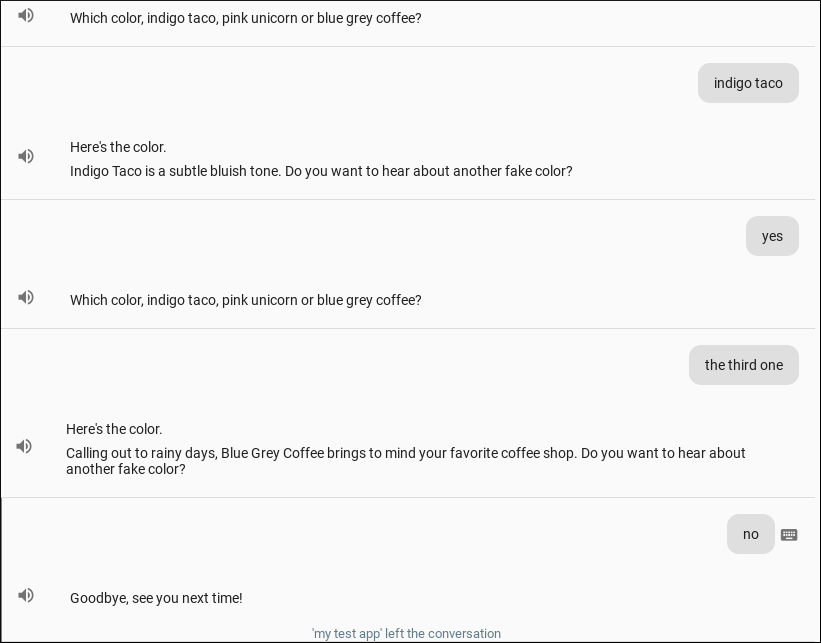
おめでとうございます！
あなたは、Actions on Google を使って、会話型ユーザインターフェースを構築するために必要な先進的なスキルを身につけました。
追加の学習リソース
Actions on Googleについて学ぶために、以下のリソースについても参考にすることができます:
- actions.google.com: Actions on Googleの公式ドキュメントサイトです。
- Actions on Google GitHub repo: サンプルコードとライブラリがあります。
- Dialogflow.com: Dialogflowの公式ドキュメントサイトです。
- Actions on Google Developers: Actions on Google を使っている開発者向けの公式な Google+ コミュニティです。
- Conversation design guidelines: アクションを設計するためのベストプラクティスおよびガイドラインです。
Twitter @ActionsOnGoogle で最新のアナウンスに耳を傾け、 #AoGDevs にツイートしてあなたが作ったものを共有しましょう！
Feedback survey
次に進む前に、私たちにこのフォームからフィードバックをいただければと思います。